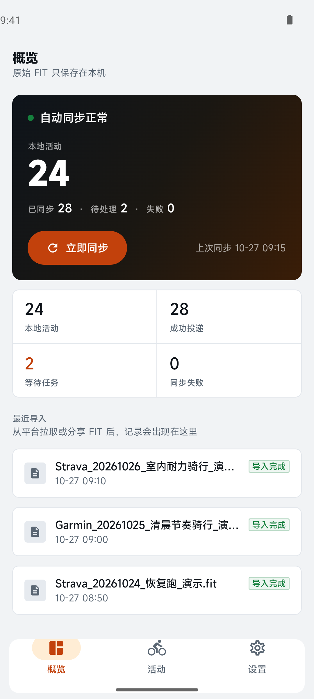

想同步时，
就同步一次。
选择来源、目标和运动类型，按需要补齐一批活动；这次操作不会改变长期规则。
一款开源的 Android 运动记录同步工具
把散落在不同平台的活动带到一起。
原始 FIT、同步任务和你的选择，都在自己的手机里。
ANDROID 8.0+ 免费开源 前往 GitHub Releases 下载

SIX PLATFORMS, ONE PLACE
把原始 FIT 活动带到你常用的平台。
每个平台最多连接一个账号。
Garmin Connect、COROS 和 iGPSPORT 当前面向中国站。部分平台适配仍为实验性，登录状态和平台接口变化可能影响同步。 查看平台能力 ↗
01 / MADE FOR YOUR MOVEMENT
无论是整理过去的骑行，还是让今后的活动自动到达目标平台，你都可以自己决定同步的方向。
选择来源、目标和运动类型，按需要补齐一批活动；这次操作不会改变长期规则。
按来源开启目标平台的自动化规则；需要时，也可以单独选择补发现有历史活动。
根据时间、距离和轨迹等信息识别重复活动，保留不同来源的原始副本；不确定时交给你复核。
02 / BUILT FOR EVERYDAY
同步进度、运动记录和规则设置，
都在一个简单的界面里。
同步状态和最近导入，一眼看明白。
截图来自应用，活动、账号状态与任务均为演示数据。
在 GitHub Releases 下载 APK，安装到 Android 8.0 及以上设备。
在平台账号页面登录，并按平台提示完成必要的验证。
立即同步一次，或开启自动化规则，让后续活动按选择的路径同步。
04 / YOUR DATA, YOUR CHOICE
活动库、去重结果、同步任务和 FIT 文件保存在手机的应用沙箱里。同步时，手机直接与选择的平台通信，不需要 FitSync 自建服务器。
地图需要联网加载瓦片。部分平台通过网页会话或账号登录；请妥善保管自己的设备和账号。
了解隐私与数据05 / GOOD TO KNOW
目前围绕原始 FIT 文件工作。如果平台没有提供原始 FIT，就无法通过该平台自动搬运；TCX、GPX 不会被当作 FIT 导入。
可以在自动化路径中单独开启“补发现有历史”。默认历史拉取范围为最近 90 天，可在应用设置中调整。
部分平台需要异步处理文件。FitSync 会等待远端活动确认，然后更新状态；登录失效或需要网页验证时会提示处理。
周期同步由 Android WorkManager 调度。实际执行时间受系统和厂商省电策略影响，可在应用的后台运行设置中检查相关限制。
READY FOR YOUR NEXT RIDE?
免费开源，面向 Android。现在就开始整理你的运动记录。